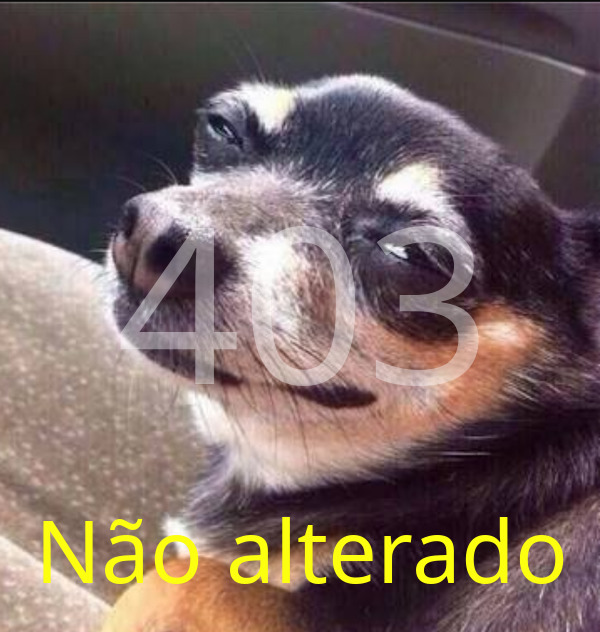

CLIQUE EM QUALQUER LUGAR PARA DIMINUIR A IMAGEM.

olá
API - Resposta de status http
üòè
https://jul10l1r4.github.io/HTTP_-_Resposta/img/[Seu código de erro]
Veja as imagens de erro, pode baixá-las e usar quando quiser ❤.
Como Usar.
200 | Okay
201 | Criado
204 | Nenhum Conteúdo

304 | Não modificado
400 | Requisição inválida
401 - Não autorizado
403 | Proibido
404 | Não encontrado
 409 | Conflito
409 | Conflito
500 | Erro interno do servidor